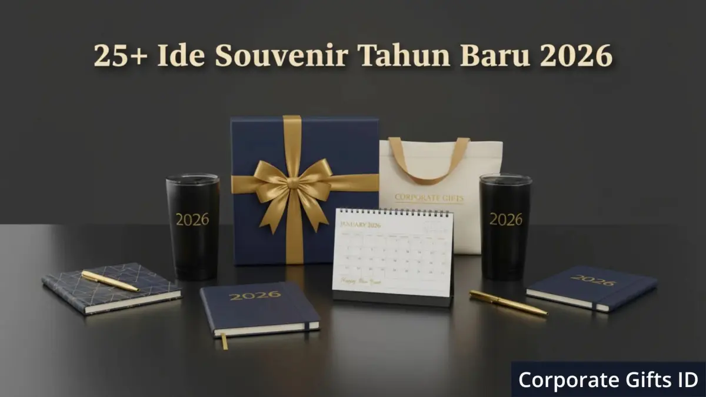

Corporate Gifts ID - Souvenir kantor tahun baru 2026 terbaik adalah barang fungsional bermerek seperti tumbler custom, notebook eksklusif, dan tote bag, ditambah pilihan premium seperti paket kopi atau diffuser aromaterapi untuk klien dan mitra bisnis penting. Kombinasi souvenir fungsional, premium, personal, dan ramah lingkungan ini membantu perusahaan menyampaikan apresiasi sekaligus memperkuat citra merek di awal tahun.
Momen pergantian tahun selalu menjadi kesempatan emas bagi perusahaan untuk memperkuat citra serta menunjukkan apresiasi tulus kepada karyawan, klien, maupun mitra bisnis. Pemilihan souvenir tahun baru 2026 yang tepat menjadi bagian tak terpisahkan dari strategi promosi bisnis yang mampu memperkokoh loyalitas dan mempererat hubungan jangka panjang, asalkan kurasinya relevan, bermakna, dan selaras dengan budaya perusahaan.
Poin Kunci Souvenir Kantor Tahun Baru 2026:
- Fungsionalitas Harian: Memilih barang yang terpakai rutin menjamin eksposur brand jangka panjang di meja kerja penerima.
- Sentuhan Eksklusif: Hadiah untuk klien VIP membutuhkan kemasan boks elegan seperti hardbox magnetik bertanda tangan pimpinan.
- Nilai Keberlanjutan: Material ramah lingkungan (eco-friendly) mempertegas komitmen ESG dan citra positif perusahaan.
- Personalisasi Khusus: Penambahan nama penerima atau grafir logo perusahaan meningkatkan kedekatan emosional.
- Perencanaan Waktu: Pemesanan 1 hingga 2 bulan sebelum akhir tahun mencegah keterlambatan akibat lonjakan kapasitas produksi.
Souvenir Fungsional untuk Kebutuhan Harian
Souvenir fungsional menjamin frekuensi penggunaan jangka panjang sekaligus meningkatkan visibilitas merek dalam aktivitas kantor sehari-hari. Berikut tujuh pilihan yang paling banyak dipesan perusahaan:
-
Tumbler atau Botol Minum
Custom
Tumbler insulasi ganda berbahan stainless steel 304 berlogo perusahaan menjadi favorit di tengah tren gaya hidup sehat. Pilih desain minimalis berdaya tahan suhu panas dan dingin hingga 12 jam agar tampak modern dan eksklusif. -
Buku Agenda atau Notebook Custom 2026
Agenda tahunan 2026 dengan sampul kulit sintetis elegan tetap sangat relevan di era digital. Tambahkan emboss logo, nama penerima, atau kutipan visi perusahaan untuk memberikan sentuhan personal. -
Set Alat Makan Kayu (Cutleries Set)
Alternatif ramah lingkungan yang sangat berguna untuk makan siang higienis di kantor. Ukiran logo pada kotak wadah kayu memberi tampilan natural dan bernilai etis tinggi. -
Flash Drive USB Kartu atau Metal
Simbol efisiensi dalam mobilitas data kerja digital. Media penyimpanan ini sangat praktis dan dapat dicetak grafir laser tahan lama dengan logo perusahaan. -
Tas Jinjing Kanvas (Tote Bag Premium)
Tote bag kanvas tebal berkualitas tinggi berfungsi ganda: menampung laptop dan berkas kantor, sekaligus menjadi media promosi berjalan yang memperluas jangkauan brand di ruang publik. -
Mousepad Ergonomis dengan Wrist Rest
Aksesori meja kerja sederhana ini terbukti efektif meningkatkan kenyamanan mengetik berjam-jam dan mudah dicetak visual kreatif sesuai identitas korporat. -
Kotak Makan Stainless Steel (Lunchbox Anti-Tumpah)
Pilihan sempurna untuk karyawan aktif yang peduli kesehatan dan pengurangan sampah plastik. Desain kedap udara dengan klip pengunci memastikan makanan tetap higienis.
Souvenir Premium dan Elegan untuk Klien
Souvenir premium adalah cerminan penghargaan tertinggi yang menunjukkan perhatian mendalam kepada mitra bisnis, dewan komisaris, atau klien bernilai strategis:
-
Paket Kopi atau Teh Spesial (Specialty Coffee Gift Set)
Pilihan elegan yang menghadirkan pengalaman relaksasi eksklusif. Kemas biji kopi nusantara pilihan dalam kotak kayu pinus dengan kartu ucapan terima kasih bertanda tangan pimpinan direksi. -
Lilin Aromaterapi atau Reed Diffuser Mewah
Hadiah yang menghadirkan suasana menenangkan di ruang kerja atau ruang keluarga. Pilih wewangian premium seperti lavender, sandalwood, atau white tea dengan botol kaca berlabel grafir. -
Voucher Belanja atau Staycation Korporat
Sangat fleksibel, praktis, dan dihargai tinggi karena memberikan kebebasan bagi penerima untuk memilih hadiah impian mereka bersama keluarga. -
Jam Meja Kayu Multifungsi dengan Wireless Charger
Kombinasi desain kayu minimalis klasik dengan nilai simbolis lembaran waktu baru. Dilengkapi tatakan pengisi daya nirkabel untuk smartphone modern di meja kerja. -
Tanaman Hias Meja Mini (Succulent Kit)
Menghadirkan kesegaran visual di meja kerja sekaligus menjadi simbol pertumbuhan relasi bisnis yang berkelanjutan dari tahun ke tahun. -
Pulpen
Metal Eksklusif Custom Grafir
Pena rollerball bermaterial logam dengan bobot mantap dan ukiran laser nama penerima merupakan simbol prestisius yang tak lekang oleh waktu saat penandatanganan kontrak penting.

Pilihan hampers dan merchandise akhir tahun dalam kemasan hardbox eksklusif bernilai guna tinggi.
Souvenir Unik dan Personal untuk Karyawan
Souvenir personal memiliki nilai emosional tinggi karena dirancang khusus untuk mengapresiasi dedikasi dan kerja keras tim internal sepanjang tahun buku:
-
Kalender Meja Custom 2026
Dibuat dengan ilustrasi bertema pencapaian tim atau foto dokumentasi kegiatan bersama. Menjadi pengingat visual kebersamaan yang menemani sepanjang tahun kerja baru. -
Mug Keramik Custom Berwarna (Two-Tone Mug)
Cinderamata kantor klasik yang tetap disukai, kini tampil kekinian dengan perpaduan warna corporate palette dan grafis inspiratif. -
Paket Kue Kering atau Cookies Premium
Sangat pas untuk dinikmati bersama keluarga di rumah selama masa liburan pergantian tahun. Dikemas rapi dalam toples kaca berhias pita satin. -
Scrapbook atau Buku Foto Kilas Balik Perusahaan
Mencatat perjalanan divisi, peluncuran produk sukses, dan momen keakraban tim yang memantik rasa bangga serta loyalitas kerja. -
Gantungan Kunci Metal 3D atau Kulit Custom
Mungil, awet, dan fungsional sebagai cinderamata harian yang selalu dibawa saat bepergian atau berkendara.
Souvenir Ramah Lingkungan (Eco-Friendly)
Pilihan produk ramah lingkungan kian digemari institusi modern karena mencerminkan komitmen nyata terhadap prinsip keberlanjutan (sustainability):
-
Sabun Batang Alami Buatan Tangan (Artisan Handmade Soap)
Diformulasikan dari bahan organik seperti minyak kelapa murni, minyak zaitun, dan minyak atsiri. Memberikan kesan natural yang menawan dan ramah kulit. -
Tas Serut (Drawstring Bag) Bahan Daur Ulang
Ringan, kuat, dan multifungsi untuk kegiatan olahraga kantor atau kegiatan luar ruangan (outdoor gathering). -
Botol Minum Insulasi Berbalut Bambu Alami
Kombinasi lapisan dalam stainless steel dengan bagian luar kayu bambu alami menghadirkan nuansa hangat yang berkelas. -
Buku Catatan Kertas Daur Ulang (Recycled Paper Notebook)
Menonjolkan kepedulian terhadap kelestarian hutan tanpa mengorbankan kenyamanan menulis dengan pulpen tinta gel. -
Set Sedotan Stainless dan Sikat Pembersih
Perlengkapan wajib pengganti sedotan plastik sekali pakai, dikemas dalam pouch blacu custom logo. -
Kemasan Kardus Estetik Ramah Lingkungan (Corrugated Kraft Box)
Sentuhan kemasan kardus daur ulang berdesain minimalis mampu memangkas limbah non-organik secara signifikan. -
Payung Lipat Berbahan Kain RPET (Daur Ulang Botol Plastik)
Hadiah proteksi cuaca yang fungsional sekaligus menjadi bukti nyata partisipasi perusahaan dalam ekonomi sirkular.
Tabel Rekapitulasi 25 Ide Souvenir Kantor 2026
Gunakan matriks perbandingan berikut untuk mempermudah pemetaan jenis souvenir sesuai sasaran penerima dan anggaran perusahaan Anda:
| Kategori Souvenir | Daftar Rekomendasi Produk | Target Penerima Paling Pas |
|---|---|---|
| Kebutuhan Harian Fungsional | Tumbler insulasi, notebook agenda, cutleries kayu, flashdisk, tote bag, mousepad, lunchbox | Seluruh karyawan, staf operasional, dan peserta gathering |
| Hadiah Klien Eksekutif | Paket specialty coffee, reed diffuser, voucher belanja, jam meja kayu, sukulen, pulpen metal | Klien prioritas, mitra bisnis B2B, dan jajaran dewan direksi |
| Sentuhan Personal Internal | Kalender meja 2026, mug keramik, cookies toples kaca, scrapbook foto, gantungan kunci metal | Karyawan internal, tim proyek, dan divisi berprestasi |
| Sustainable Eco-Friendly | Sabun artisan, tas serut daur ulang, botol bambu, notebook daur ulang, payung kain RPET | Komunitas pegiat lingkungan, mitra CSR, dan publik umum |
Tips Memilih Souvenir Tahun Baru 2026 yang Efektif
Agar pengadaan cinderamata pergantian tahun memberikan imbal hasil branding (ROI) yang maksimal, terapkan empat langkah strategis berikut:
- Kenali Profil Penerima: Bedakan tingkatan hadiah untuk karyawan umum, mitra bisnis strategis, dan jajaran eksekutif agar persepsi nilainya tepat sasaran.
- Utamakan Kualitas dan Branding Rapi: Souvenir bermaterial awet dengan aplikasi logo rapi jauh lebih dihargai daripada cinderamata rapuh yang cepat rusak.
- Pilih Vendor Resmi Berpengalaman: Bekerjasamalah dengan vendor corporate gift berbadan hukum yang memiliki sistem kendali mutu (QC) ketat dan faktur pajak resmi.
- Gunakan Kemasan Eksklusif: Kotak kemasan adalah kontak visual pertama. Kemasan hardbox bernuansa mewah seketika melipatgandakan nilai estetika produk di dalamnya.
Timeline Ideal Pengadaan Souvenir Akhir Tahun
Lonjakan permintaan pabrik di kuartal keempat memerlukan manajemen waktu yang disiplin agar tidak terjadi keterlambatan pengiriman paket:
| Periode Waktu | Tahapan Kerja Pengadaan | Output / Hasil |
|---|---|---|
| Oktober (H-60) | Penentuan konsep, alokasi anggaran, dan seleksi vendor katalog | Finalisasi vendor dan persetujuan penawaran resmi |
| Awal November (H-45) | Pembuatan layout visual logo, approval mockup digital, dan sampling | Sampel fisik disetujui tanpa revisi (golden sample) |
| Akhir November (H-30) | Produksi massal, proses cetak grafir/UV, dan perakitan hardbox | Barang selesai diproduksi dan lolos uji kontrol kualitas |
| Awal Desember (H-15) | Pengepakan individual, penataan kartu ucapan, dan distribusi logistik | Souvenir siap dibagikan ke seluruh cabang tepat waktu |
Pertanyaan Seputar Souvenir Tahun Baru 2026 (FAQ)
Kesimpulan: Awali Tahun Baru 2026 dengan Kemitraan yang Erat
Memilih souvenir tahun baru 2026 bukan sekadar rutinitas akhir tahun, melainkan investasi strategis jangka panjang untuk merawat relasi bisnis dan memupuk loyalitas karyawan. Cinderamata yang tepat, baik berkarakter fungsional, eksklusif, personal, maupun ramah lingkungan, menjadi simbol penghargaan yang tak terlupakan.
Dengan perencanaan matang sejak dini, organisasi Anda tidak hanya membagikan kado pergantian tahun, tetapi juga menanamkan kepercayaan mendalam menyongsong kesuksesan bersama di tahun 2026. Jadikan momentum ini untuk menunjukkan karakter kepemimpinan dan komitmen kualitas perusahaan Anda bersama Corporate Gifts ID.